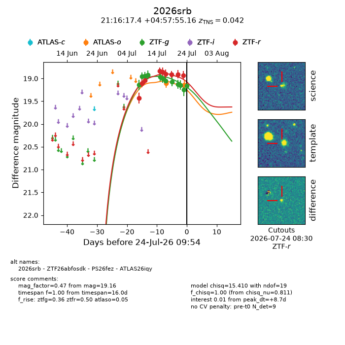
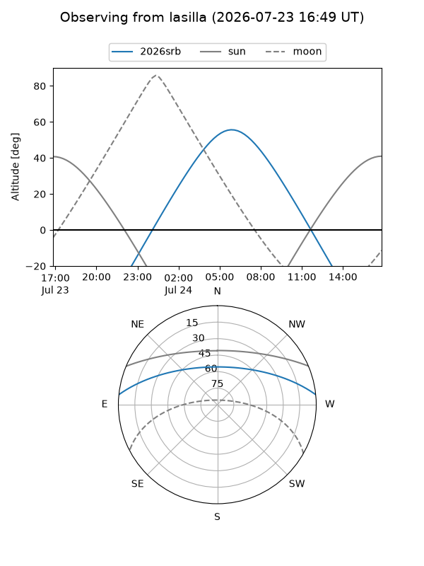
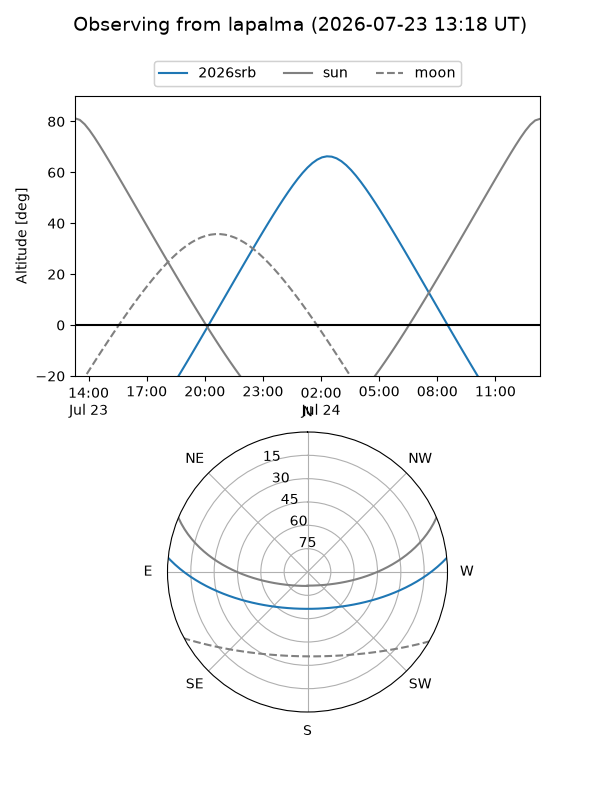
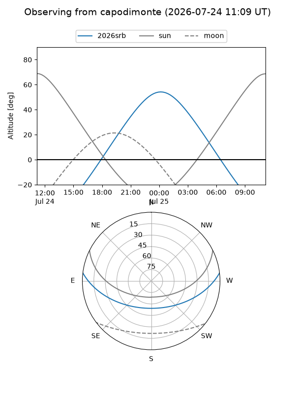
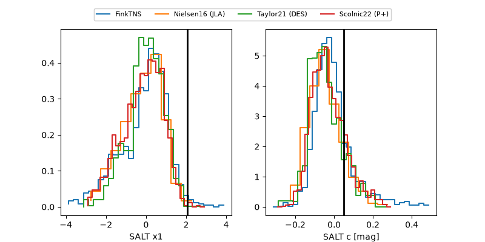

2026srb
Target 2026srb at 2026-07-24 09:56
Aliases and brokers:
FINK-ZTF: ztf.fink-portal.org/ZTF26abfosdk
Lasair-ZTF: lasair-ztf.lsst.ac.uk/objects/ZTF26abfosdk
ALeRCE-ZTF: alerce.online/object/ZTF26abfosdk
YSE-PZ: ziggy.ucolick.org/yse/transient_detail/2026srb
TNS name: wis-tns.org/object/2026srb
Direct TNS query: direct search
alt names
ZTF26abfosdk (ztf,fink_ztf)
2026srb (tns,yse)
ATLAS26iqy (atlas)
PS26fez (panstarrs)
Coordinates:
equatorial (ra, dec) = 319.0725,+4.96532
equatorial (HMS+DMS) = 21:16:17.40,+04:57:55.16
galactic (l, b) = (56.1862,-28.97025)
Flags:
TNS type: SN II
TNS redshift: 0.0420
peak dt: +8.7
Photometry:
last atlaso=19.14, ztfg=19.16, ztfr=18.93
2 atlaso, 12 ztfg, 9 ztfr detections
Lightcurve

Visibility



Additional plots
